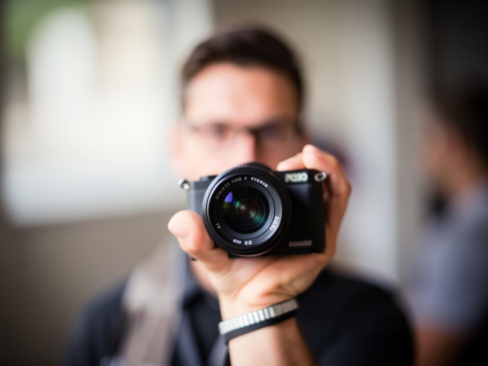
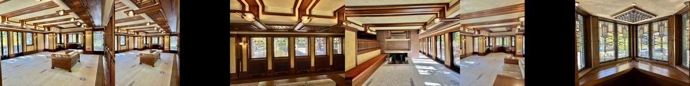
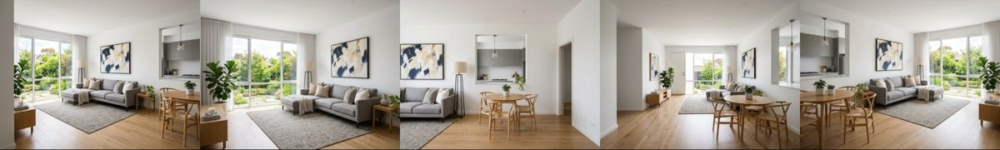
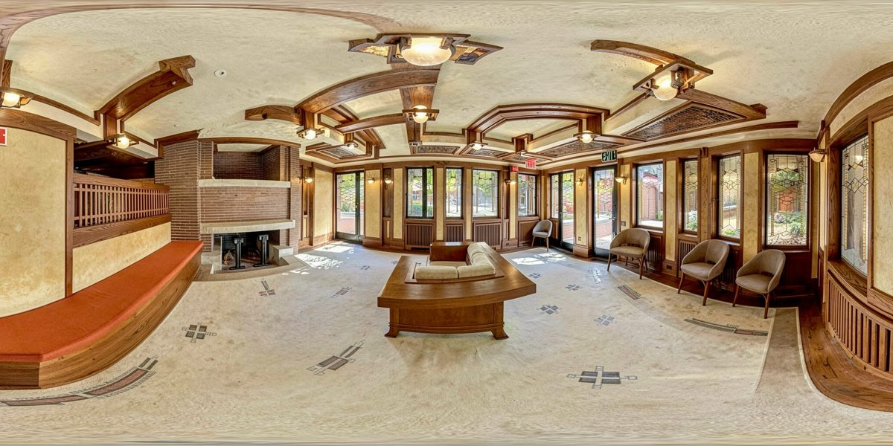
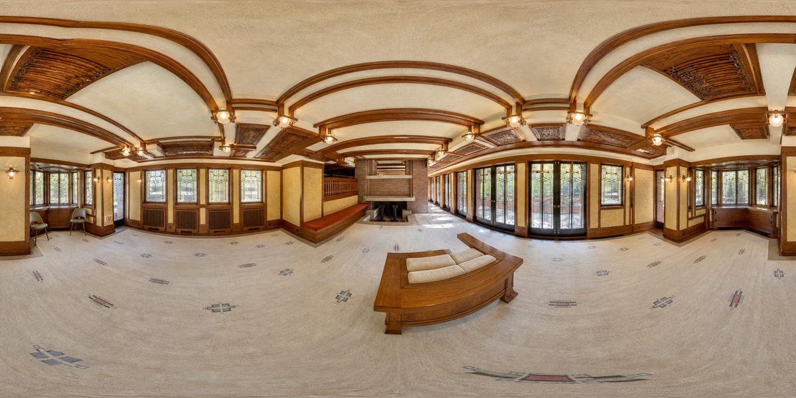
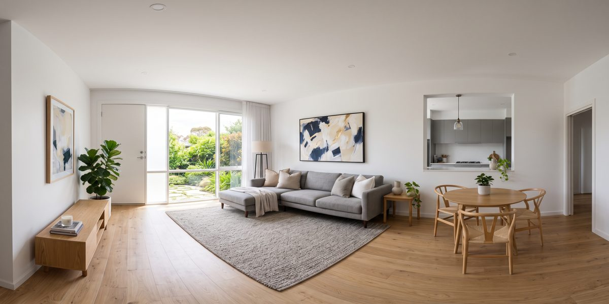

De cuatro a seis fotos normales del mismo ambiente, o solo una descripción de texto, se convierten en una panorámica equirectangular fotorrealista que puedes girar como en un tour virtual. Sin cámara 360, sin escaneo, sin software 3D.

La IA entiende cómo se conectan las fotos (el mismo sofá en dos fotos, la misma ventana desde dos ángulos) y reconstruye el ambiente como un espacio único, en formato 2:1 de 4096×2048, listo para cualquier visor 360.
Conserva paredes, puertas, ventanas, muebles y materiales. No rediseña ni inventa objetos; cada mueble aparece una sola vez. Lo que no muestra ninguna foto se infiere de forma conservadora.
¿No tienes fotos? Describe el espacio en texto. La IA crea cinco fotos coherentes del mismo ambiente y luego genera la imagen 360°. Sirve para conceptos, vistas previas y contenido.
Proporción exacta 2:1, resolución mínima de 4096×2048, puntuación de costura entre los bordes, regeneración automática si la costura falla y suavizado final. Todo queda en el informe.
Es una reconstrucción con IA, no una medición. Sirve para marketing inmobiliario, vista previa, tour virtual y como insumo para video con IA. No sustituye un escaneo LiDAR.
Gemini lee todas las fotos como un único espacio: paredes, puertas, ventanas, muebles, iluminación, dirección estimada de cada foto y lo que falta.
Las fotos se usan como referencia en un modelo con 2:1 nativo. El predeterminado es Flux 2 Klein vía Freepik/Magnific; GPT Image 2 y Gemini vía OpenRouter son alternativas.
Relación de aspecto corregida, remuestreo hasta 4096×2048, puntuación de costura (≤12 buena, ≤30 aceptable, >30 visible), una regeneración automática y fundido cruzado en los bordes.
Las claves se leen en runtime desde tu archivo de entorno. No se copia nada al proyecto.
FastAPI, Pillow, NumPy y httpx.
# en la carpeta del proyecto pip install -r requirements.txt
Freepik/Magnific para generar, Gemini para la visión. OpenRouter es opcional.
# ~/projetos/wifi/.env MAGNIFIC_API_KEY=... GEMINI_API_KEY=... OPENROUTER_API_KEY=... # opcional
4 a 6 JPG/PNG del mismo ambiente, desde distintos ángulos. Una buena cobertura vale más que cinco fotos casi iguales.
sala/ ├── 01.jpg # giro hacia el sofá ├── 02.jpg # giro hacia la ventana └── 03.jpg # giro hacia la entrada
Todos usan el mismo motor. El resultado se guarda en ~/projetos/output/fotos3d/<nome>/ con el PNG, el análisis, el prompt y el informe.
Indica la carpeta y ponle un nombre. El modelo predeterminado es Flux 2 Klein (10 créditos Magnific por imagen).
cd ~/projetos/fotos3d python3 -m engine.pipeline /caminho/fotos-da-sala --nome sala-302 # ~1 min
Describe el ambiente. La IA crea cinco fotos coherentes y sigue el mismo flujo.
python3 -m engine.pipeline --assunto "sala moderna, sofá cinza em L, janela grande com vista pro jardim, piso de madeira clara" --nome demo
Cambia de modelo cuando quieras más referencias o 4K nativo. El informe registra cuál se usó.
python3 -m engine.pipeline sala/ --nome sala-302 --modelo gpt-image-2 --size 4K python3 -m engine.pipeline sala/ --nome sala-302 --modelo or-gemini-pro # vía OpenRouter
Arrastra las fotos (o pega la ruta de la carpeta), elige el modelo con el costo al lado, sigue el progreso y gira el resultado en el visor integrado. Galería con todo lo que ya se generó.
uvicorn web.app:app --port 8360 # abre http://127.0.0.1:8360
Revisa siempre el resultado en el visor, no en la imagen plana: muebles duplicados, puertas repetidas, paredes imposibles, cambios bruscos de luz o cortes en el punto de giro. Si algo está mal, vuelve a generar o cambia de modelo.
# visor independiente: ábrelo en el navegador y arrastra el PNG viewer/index.html # informe con la proporción, la resolución y la puntuación de costura ~/projetos/output/fotos3d/sala-302/relatorio.json
Instálala una vez y después pide en lenguaje natural: "usa la skill property-360 en las fotos de la carpeta X".
ln -s ~/projetos/fotos3d/skill/property-360 ~/.claude/skills/property-360
| Modelo | Proveedor | 2:1 nativo | Resultado de la prueba | Costo |
|---|---|---|---|---|
flux-klein (predeterminado) | Freepik / Magnific | sí, 2048×1024 remuestreado | equirectangular real, muy fiel | 10 créditos |
gpt-image-2 | Freepik / Magnific | sí, hasta 4K, 16 refs | mejor calidad: proyección esférica correcta, buena unión | ~45 a 90 créditos |
or-gemini-pro | OpenRouter | no (16:9 remuestreado) | 360 plausible, menos fiel a los detalles | ~US$ 0,13 |
or-gemini-flash | OpenRouter | no | tiende a salir con gran angular, no en 360 | ~US$ 0,04 |
Arriba, las fotos de entrada. Abajo, la panorámica generada (parece estirada en la pantalla plana, pero completa los 360° en el visor).





La versión 1.0 resuelve una sala a la vez. Las próximas fases conectan las salas en un tour.